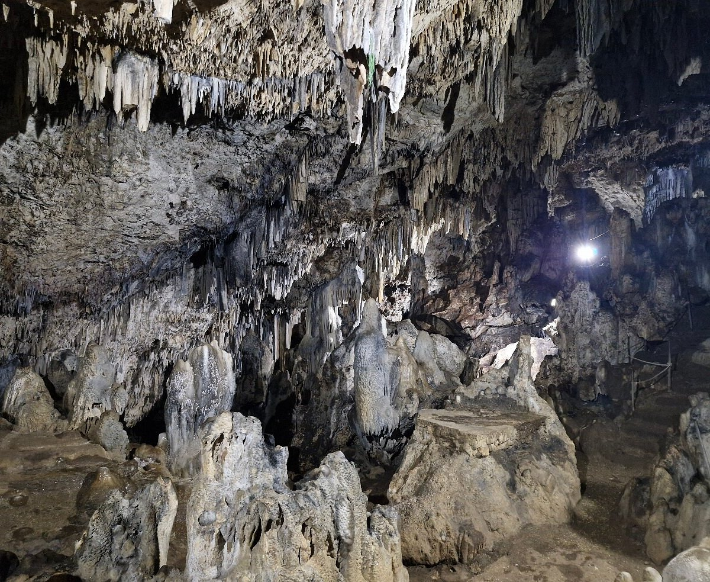
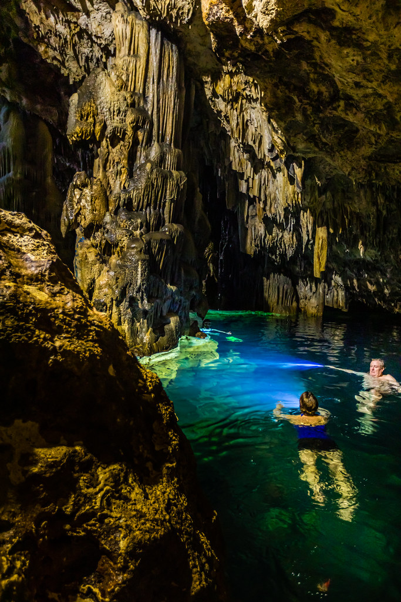

Anahulu Cave


Anahulu is a limestone cave on Tongatapu with a freshwater pool inside. Stalactites hang from the ceiling and the water is cool and very clear. People like to swim here to cool off after a hot day, and it feels peaceful and a little bit mysterious.